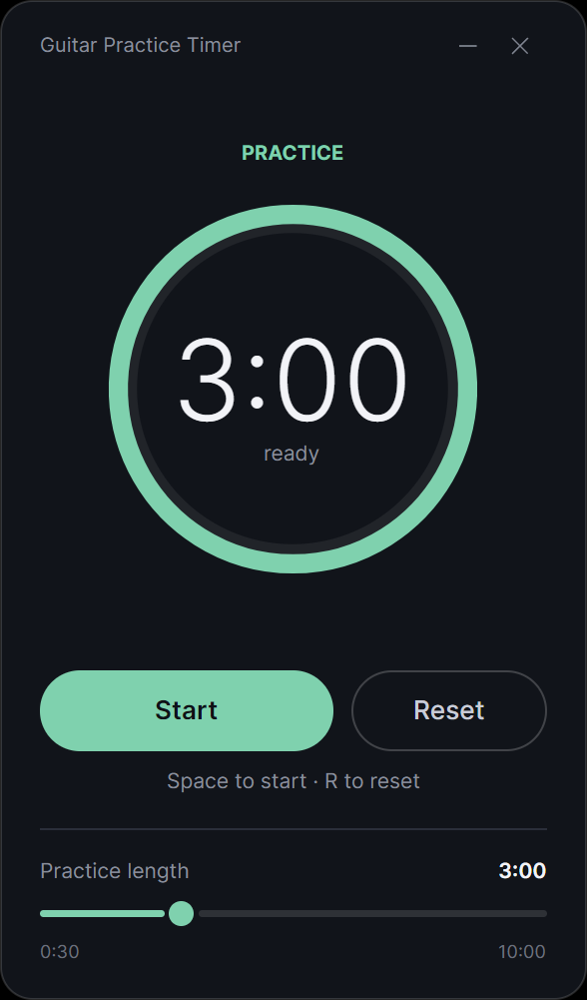
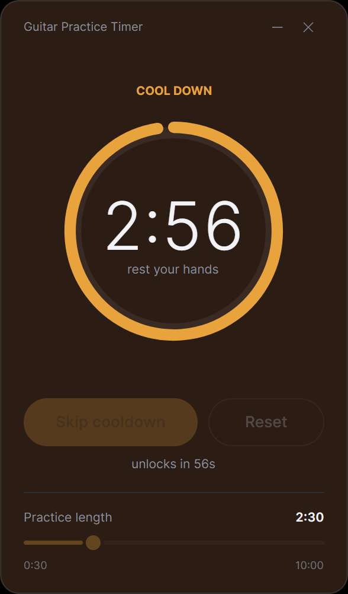

Practice
A practice timer for guitarists that splits a session into short focused blocks — and then enforces the break between them, because that break is where a surprising amount of the learning actually happens.
Free, open source, and completely offline. It has no account, no analytics, and no network code of any kind.


The cycle
You set the practice length and start. When the block ends the app plays a two-note chime, the entire window cross-fades from cool mint to warm amber, and the break begins on its own — you don't have to remember to take it.
The evidence
In 2019 a team at the US National Institutes of Health had people learn a five-element finger-tapping sequence in alternating 10s bouts of practice and 10s of rest, under magnetoencephalography. Early learning was accounted for almost entirely by gains that appeared across the rests, not within the practice bouts — and brain activity during each rest predicted how much that particular break would give.
A later study on a digital piano found the effect is specific: players who practised a different sequence during their break gained significantly less across it. Resting means resting, not switching to another exercise.
Two honest caveats.
The strongest evidence sits at a timescale of seconds. This app enforces three minutes, which is an extrapolation, not a finding.
And the 2025 PNAS paper above disputes the mechanism — though not that performance improves coming out of a break. Either way, the break separately does the uncontroversial job of keeping your hands out of a repetitive strain injury.
Cool down
Every practice tool lets you skip the rest. That is the one thing this one won't do, and it is deliberate — the break is not idle time between the useful parts, it is one of the useful parts.
So during the cooldown the skip button stays locked for the first 60 seconds, reset does nothing at all, and the length slider is disabled until the break is over. There is no setting to turn any of that off, and requests to add one get politely declined.
Put the guitar down. That is the whole feature.
Get it
One file. Nothing to install, no runtime to fetch first.
Android and iOS builds share the same timer core and are in progress.
Verify
Short answer: yes — and you don't have to take my word for it. Every claim below is something you can check for yourself in a couple of minutes.
gh attestation verify GuitarPracticeTimer-win-x64.zip \
--repo Baracuda011/GuitarPracticeTimersha256sum -c SHA256SUMS.txt # Linux
Get-FileHash *.zip -Algorithm SHA256 # WindowsSHA256SUMS.txt, so you can confirm the file you
downloaded is byte-for-byte the file that was published.
Support
The app is free and stays free. There is no paid tier planned, nothing is held back, and it will never ask you for anything inside the app itself.
If this little tool helps you practise better, you can support its development with any amount you like. No obligation — just keep practising.